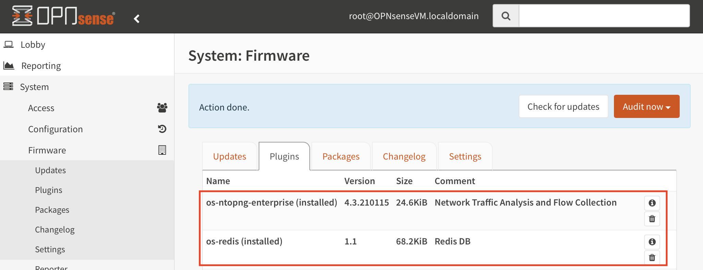
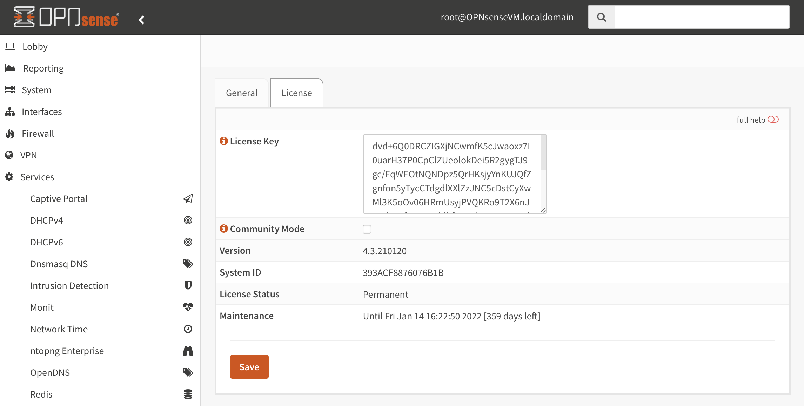
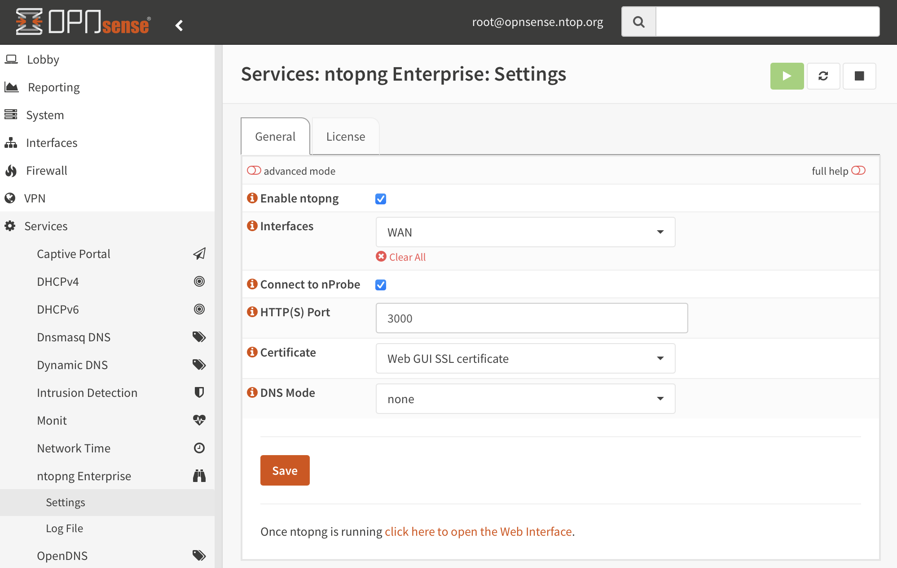

OPNsense
ntopng можно установить на OPNsense как плагин через веб-интерфейс (рекомендуется) или с помощью командной строки. В обоих случаях репозиторий ntop для FreeBSD должен быть настроен, как описано в https://www.ntop.org/support/documentation/software-installation/.
Предупреждение
ntopng создаст файлы на вашем устройстве OPNsense для хранения данных о трафике. Если у вас устройство с ограниченным дисковым пространством, настройте ntopng для хранения на диске только нескольких таймсерий, иначе вы можете заполнить все доступное дисковое пространство и сделать вашу систему нестабильной.
Конфигурация репозитория
Войдите в оболочку OPNsense как администратор (выберите вариант 8).

OPNsense Ракушка
И установите репозиторий, используя команду, указанную по адресу https://www.ntop.org/support/documentation/software-installation/ (вы можете вырезать и вставить команду ниже).
pkg add https://packages.ntop.org/FreeBSD/FreeBSD:15:amd64/latest/ntop-1.0.pkg
Результат должен выглядеть так, как показано ниже.

ntop Установка репозитория
Установка плагина
Плагин ntopng можно установить из Shell или через веб-сайт OPNsense GUI.
Примечание
Для установки плагинов в OPNsense необходимо войти в систему как администратор.
Войдите в оболочку OPNsense от имени администратора (выберите опцию 8) и запустите:
pkg update
pkg install os-ntopng-enterprise os-redis
Альтернативно вы можете указать в браузере страницу управления OPNsense и установить плагины из пользовательского интерфейса. Перейти к Система > Прошивка > Плагины страница, и нажмите на Проверьте наличие обновлений.

Плагины — проверьте наличие обновлений
ОС-ntopng-предприятие плагин должен появиться в списке, помимо встроенного ос-ntopng плагин, который не предоставляет расширенные и корпоративные функции (пожалуйста, сделайте обязательно удалите его, если последний уже установлен).

Установка плагинов ntopng и Redis
Установите ОС-ntopng-предприятие и ос-redis плагины (что является обязательным) нажав на + символ.
Предупреждение
Журнал установки ОС-ntopng-предприятие может попросить выполнить команды для запуска и включения redis.
Игнорируйте эти команды, поскольку redis будет управляться из его плагина ос-redis.
Чтобы настроить ос-redis плагин, зайди Услуги > Redis, выбирать Включить Redis и нажмите Применять.

Redis Конфигурация
Плагин ОС-ntopng-предприятие Конфигурация показана в следующем разделе.
ntopng Конфигурация
Лицензия
Примечание
ntopng Community Edition бесплатна и не требует лицензии.
Для запуска лицензионной версии ntopng необходимо сгенерировать лицензионный ключ. Чтобы создать лицензию ключ, ntopng Версия и Идентификатор системы необходимы. Чтобы получить эту информацию, перейдите по адресу Услуги > ntopng Предприятие > Настройки > Лицензия.

ntopng Информация
По ссылке внизу страницы можно перейти для создания лицензионного ключа.
Лицензию можно установить на той же странице, вставив ее в Лицензионный ключ box и сохраняем конфигурацию. Службу следует перезапустить в Общий страница.
Чтобы запустить ntopng в режиме сообщества, проверьте Режим сообщества флаг, сохраните конфигурацию и перезапустите службу через Общий страница.
Услуга
Собираюсь в Услуги > ntopng Предприятие > Настройки > Общий можно настроить сервис ntopng. Базовая конфигурация обычно включает следующие шаги:
Включите службу, проверив Включить ntopng
Настройте порт и выберите Сертификат чтобы запустить GUI в режиме только HTTPS

ntopng Конфигурация
Сохраните конфигурацию и запустите службу. Ссылка внизу страницы будет перенаправит вас на сайт ntopng Web GUI.
По умолчанию ntopng анализирует трафик со всех интерфейсов. Выберите расширенный режим для выбора конкретного интерфейса. В качестве альтернативы можно использовать Подключиться к nProbe переключитесь на сбор информации о трафике из локального экземпляра nProbe (пожалуйста, посмотрите в ос-nprobe nProbe руководство по плагину).
Общие проблемы
Сбой в работе ntopng
Распространенная проблема на FreeBSD, которая не позволяет ntopng работать и даже отображение информации о версии и лицензии под Настройки > Лицензия, представляет собой повреждена база данных Redis. Чтобы быстро это исправить, необходимо удалите файлы базы данных в /var/db/redis/*.rdb и перезапустите службу (или перезагрузите машину).
Ошибка добавления репозитория
У некоторых пользователей возникли проблемы с добавлением репозитория ntop в OPNsense с помощью Сообщение «Проверка сертификата не удалась». Похоже, это связано с проблемой ACME. плагин. Ручной импорт корневой и промежуточной цепочки CA LE, похоже, решает эту проблему. Пожалуйста, прочитайте https://forum.opnsense.org/index.php?topic=25178.0 для получения дополнительной информации.
libsodium.so.23 не найден
ntopng на FreeBSD зависит от libsodium.so.23, однако OPNsense 24.x предоставляет libsodium.so.26, это приводит к сбою при попытке запуска ntopng:
«Общий объект libsodium.so.23 не найден, требуется ntopng»
В качестве обходного пути, пока версия библиотеки не будет выровнена, это можно исправить с помощью вручную создав символическую ссылку:
ln -s /usr/local/lib/libsodium.so.26 /usr/local/lib/libsodium.so.23